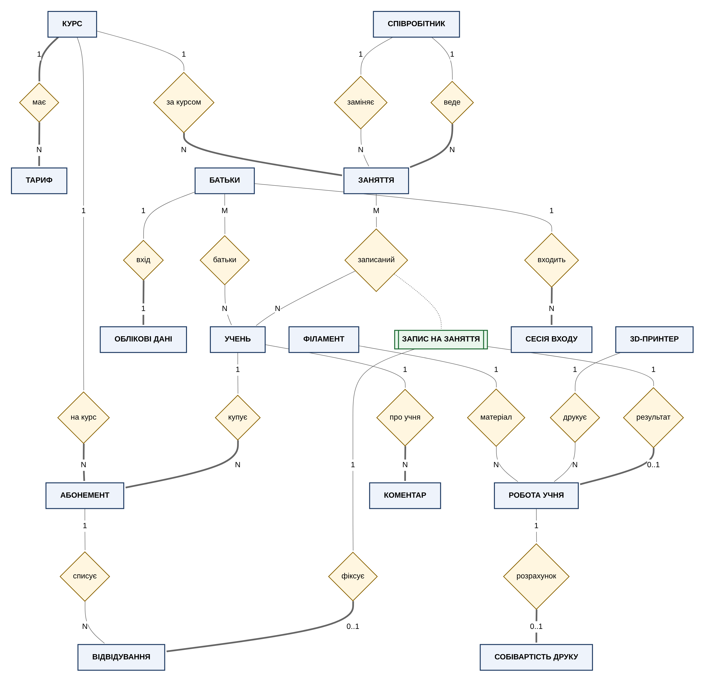
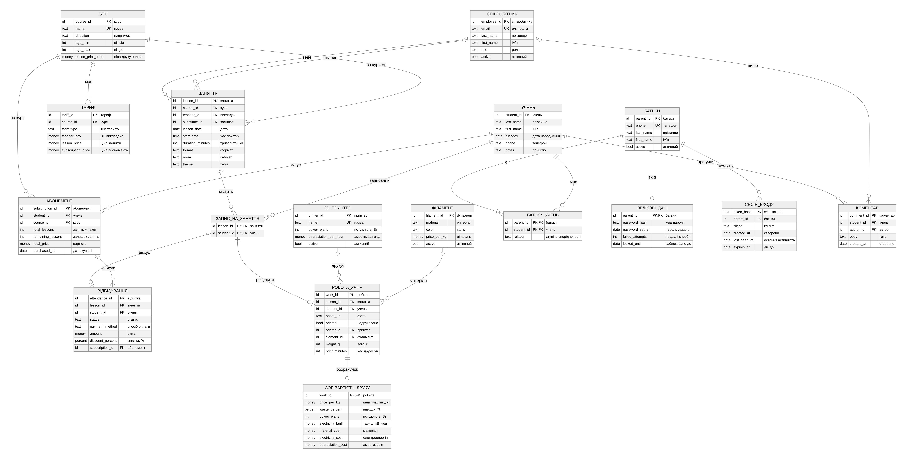

Аналіз предметної області. Проєктування моделі даних
STEM-студія «Стемік» проводить для дітей 6–14 років заняття з 3D-моделювання, віртуальної реальності та робототехніки. Ця версія сайту показує, з чого починається база даних: що відбувається в студії, як дані зберігаються зараз і яку модель ми з цього отримали.
Бізнес-процеси студії
Розклад
Разові й щотижневі серії занять у 4 кабінетах або онлайн, заміна викладача.
Учні й батьки
Картки учнів, батьківські кабінети з входом за телефоном.
Відвідування
П / Н / ВПП і оплата: картка, готівка, сертифікат або абонемент.
Абонементи
Пакет із 4 занять курсу; при ВПП заняття повертається.
3D-друк
Роботи учнів, принтери, пластик і собівартість друку.
ЗП і звіти
Тарифи «ЗП / ціна», оплачено, борг, невикористані абонементи.
Поточна схема бази даних — наживо
Дані нижче повертає функція lab_lr1_overview() навчального проєкту Supabase. Вона рахує лише агрегати, без самих рядків.
Сутності нормалізованої моделі
15 сутностей і 2 асоціативні (сині) — результат аналізу. Атрибути кожної — у протоколі ЛР1.
ER-діаграми


Нормалізація: що змінюємо
| Поточна схема | Проблема | НФ | Рішення в моделі |
|---|---|---|---|
lessons.student_ids | масив у полі, немає зовнішнього ключа | 1НФ | таблиця lesson_student |
rate_cards | повторювана група «формат → ЗП, ціна» у стовпцях | 1НФ | таблиця tariff |
students.name | прізвище й ім’я в одному полі | 1НФ | last_name + first_name |
| курс текстом | різні написання одного курсу | 3НФ | довідник course |
owner_id у відвідуваннях і роботах | транзитивна залежність через заняття | 3НФ | лише в lesson |
імена батьків у картці учня, printed_by_name | дублювання даних інших сутностей | 3НФ | parent + parent_student, FK printed_by |
Матеріали етапу
Протокол ЛР1 (PDF) Протокол ЛР1 (Word) Презентація ЛР1 SQL етапу ЛР1